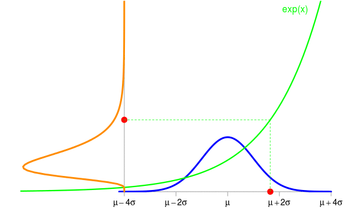

-
The change of variables of formula for probability density functions
2015-12-25
Source“How to derive the pdf of the random variable \(Y=h(X)\) when one knows the pdf of the random variable \(X\)?”. This question very frequently occurs on the internet.
For a general function \(h\), there is no direct formula to get the pdf of the random variable \(Y=h(X)\) knowing the pdf of \(X\) (assuming \(X\) has a pdf). There is a formula in case when \(h\) is a differentiable one-to-one mapping from the range (the support, I should say) of \(X\) to the range of \(Y\).
Take for example a random variable \(X \sim {\cal N}(\mu, \sigma^2)\) and set \(Y=\exp(X)\). The animation below shows some simulations of \(X\) and the corresponding values of \(Y\). The density of \(X\) is shown in blue and the one of \(Y\) is shown in orange in the vertical direction.
Now the question is: knowing the density \(f_{\textrm{blue}}\) of \(X\), what is the density \(f_{\textrm{orange}}\) of \(Y\) ?
Taking a point \(y\) in the range of \(Y\), the density \(f_{\textrm{orange}}\) provides the probability that \(Y\) belongs to a small area \(\mathrm{d}y\) around \(y\) by the formula \[ \Pr(Y \in \mathrm{d}y) \approx f_{\textrm{orange}}(y)|\mathrm{d}y| \] where \(|\mathrm{d}y|\) denotes the length of the small interval \(\mathrm{d}y\). This formula is not a rigorous one, but it allows to do exact derivations when it is carefully used. The probability \(\Pr(Y \in \mathrm{d}y)\) is the pink area on this figure:

This probability also equals the probability \(\Pr(X \in \mathrm{d}x)\), shown by the grey area below the blue curve, where \(x=\log(y)\) because of \(y=\exp(x)\), and \(\mathrm{d}x\) is the small interval around \(x\). And one similarly has \[ \Pr(X \in \mathrm{d}x) \approx f_{\textrm{blue}}(x)|\mathrm{d}x|. \] It is clear that \(|\mathrm{d}x| \neq |\mathrm{d}y|\). Recall that these two lengths are very small, hence the green function - now let us call it \(h\) instead of \(\exp\) - is like a segment on the interval \(\mathrm{d}x\), and the slope of this segment is the value \(h'(x)\) of the derivative of \(h\) at \(x\). Therefore \(|\mathrm{d}y| \approx h'(x)|\mathrm{d}x|\), and we finally get \[ \Pr(Y \in \mathrm{d}y) = \Pr(X \in \mathrm{d}x) \approx f_{\textrm{blue}}(x)\frac{|\mathrm{d}y|}{h'(x)}. \] Expressing the right-hand side in terms of \(y=h(x)\) instead of \(x=h^{-1}(y)\), this gives \[ \Pr(Y \in \mathrm{d}y) \approx f_{\textrm{blue}}\bigl(h^{-1}(y)\bigr)\frac{|\mathrm{d}y|}{h'\bigl(h^{-1}(y)\bigr)}, \] or, because of \(\frac{1}{h'\bigl(h^{-1}(y)\bigr)}={(h^{-1})}'(y)\), this can be written \[ \Pr(Y \in \mathrm{d}y) \approx {(h^{-1})}'(y)\times f_{\textrm{blue}}\bigl(h^{-1}(y)\bigr)|\mathrm{d}y|. \] By identifying this formula by the one defining the density of \(Y\): \[ \Pr(Y \in \mathrm{d}y) \approx f_{\textrm{orange}}(y)|\mathrm{d}y|, \] we finally get \[ f_{\textrm{orange}}(y) = {(h^{-1})}'(y)\times f_{\textrm{blue}}\bigl(h^{-1}(y)\bigr). \] This is the so-called change of variables formula.
Be careful about one point: this formula is not correct in general. In my example, the factor \(k\) relating \(|\mathrm{d}x|\) and \(|\mathrm{d}y|\) by \(|\mathrm{d}y| \approx k|\mathrm{d}x|\) is \(k = h'(x)\) because \(h'(x)>0\) in this example (\(h\) is increasing), and one has to take \(k=-h'(x)\) in the case \(h'(x)<0\). The general formula includes the absolute value: \[ \boxed{f_{\textrm{orange}}(y) = \bigl|{(h^{-1})}'(y)\bigr|\times f_{\textrm{blue}}\bigl(h^{-1}(y)\bigr)}. \]
- Home
- About
- PoirotReproducible Blogging with R Markdown
- SlidifyReproducible html5 slides from R markdown
- R-bloggersBlog posts about R, contributed by R bloggers worldwide.
- stla.overblogMy previous blog
- Timely Portfolio A great blog about R, Javascript, and more